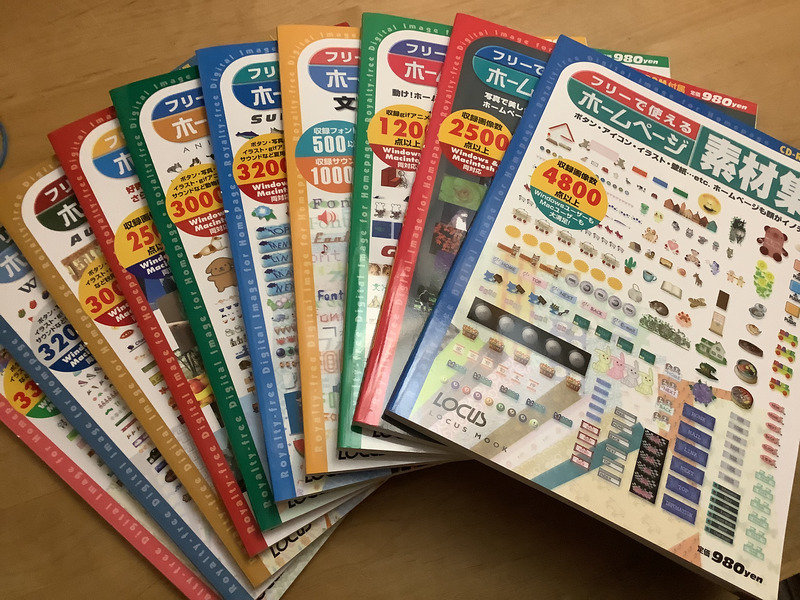

2022-04-03
 2022-03
メルカリにて 1300￥で購入しました。2003年発売のホームページ素材集が新品未開封で1300￥はお得です。
もともとは20世紀に発売された素材集が欲しかったのですが、メルカリでググッたところあまり状態の良いものが見つかりませんでしたので少し妥協してこち
らにしました。 (素材集は付属のCDが命なので、状態の悪いものを掴まされると悲惨です)
写真の通りテーマに合わせたホームページ用画像素材が大量に含まれています。
レトロなWeb素材集をつかった企画としてはデイリーポータルZの記事が有名です。 https://dailyportalz.jp/kiji/160127195580
実際に付属してきたCDを10枚読み込みました。10枚中9枚は正常に読み取れましたが、3枚目のディスクのみ上手く読みとることができま
せんでした。
ファイルシステムが壊れているだけでデータは問題なく存在しているようだったので、photoreqを用いてデータを救出しました。
フリーで使えるとタイトルにあったので出版もとのLOCUS社が権利を有する画像集かと思っていたのですが、実際は当時の Web素材配布サイトから画像を転載しているようです。正直他人の褌で相撲をとるキュレーションサイトみた いで気持ち悪いです(そんなもんなんでしょうか?)。
2003年発売とはいっても実際に画像が作られた時期はバラバラなようで、レトロな素材が欲しいという希望はほとんど満すことができまし
た。
素材集と銘打っておきながらただの紹介本であることや、CDに含まれていたフォルダのタイムスタンプが深夜0時だっ
たりと引っかかるところはありますが満足です。
使い道の不明なGIF素材 & 時代を感じる素材